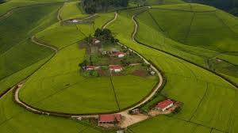

Green Rwanda is
making Rwanda full of plant in each region whether in the city or in rural areas.as to continue taking care of our country and even our selves as Rwandan as the definition tells us we can take care of our country by planting more trees where possible as it is more important .below pictures show us how to make Rwanda Green without consideing where your are whether in rural areas or in urban areas

